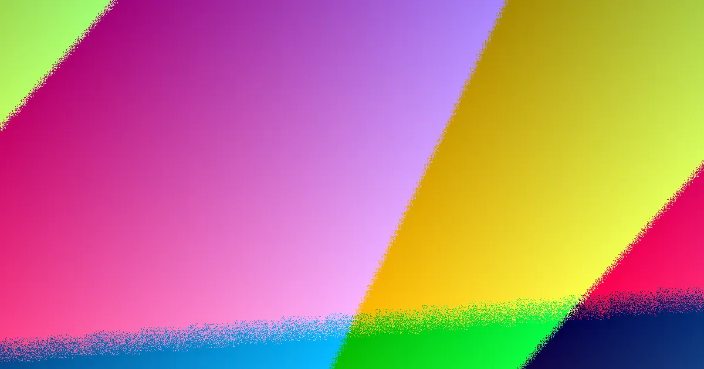

Best Website Creation is presented as a free, conversion focused web design option for Australian businesses. Treat that as a starting claim, not a complete scope. Before engaging, confirm what free covers, how conversion goals will be built in, who supplies copy and images, who owns access, and how accessibility, search basics, mobile usability and post launch changes will be handled.
For local buyers, website design australia the useful test is whether the finished site can explain the offer and prompt the right enquiry.
Website Design Australia Explained
The published positioning is short: free, conversion focused and aimed at Australian businesses. That can be useful for a small firm that needs a credible public presence, but the words do not list packages, timeframes, platform choices or inclusions. The first job is to turn a headline claim into an operational brief. Read the the website design overview as the parent view, then use this checklist to test fit.
Free should define the build only if the boundaries are clear. Ask whether pages, copy, images, calls to action, contact forms, hosting, domain handling, analytics, search basics, support and ownership are inside the offer or billed later. If any item sits outside the free build, that should be known before design or content work begins.
Scope questions before work starts
A clear conversation can prevent a simple project from drifting. Put the questions in writing and ask for plain answers.
- Which pages are included and which require separate work.
- Who approves copy, images, calls to action and form fields.
- Whether basic search, analytics and mobile review are included.
- Who controls domain access, hosting access and published content.
- How future edits, redesign rounds and support requests are charged.
Scope is not paperwork for its own sake. It decides who is responsible when a phone number changes, a service is added or a form stops sending enquiries.
Who this applies to
This angle suits small and local Australian businesses that need a public website and are comparing a free design offer with a paid agency, a template builder or an internal build. It is most useful when the site must turn offline trust into calls, quote requests, bookings or email enquiries.
It is less suited to complex ecommerce, regulated customer portals, custom software or projects with heavy integration needs. Those projects still need careful design, but the buying process should also cover security, architecture, support commitments and change control.
Briefing a conversion focused build
A useful brief starts with the action the site should support. For many service businesses that may be a phone call, quote request, booking enquiry or email. Since conversion focused positioning is used, ask how the proposed layout will make that action visible without making the page vague or forced.
List the main services in plain language, prepare approved business details and trust signals, and define the primary enquiry goal before discussing colour, fonts or animations. Mobile users should reach the same action quickly, and launch checks should be recorded so the business knows what was tested.
Trust, standards and representations
The World Wide Web Consortium is a standards body for the web, so accessibility and valid structure should be treated as part of quality rather than decoration. A buyer does not need to become a developer, but can ask about clear headings, readable contrast, keyboard friendly navigation, descriptive links and forms that work on a phone.
Search visibility starts with fundamentals: crawlable text, sensible page titles, descriptive internal links and content that reflects the real offer. The Australian Competition and Consumer Commission is relevant because business websites make representations to consumers. Avoid claims about being the best, cheapest, fastest or most trusted unless they can be substantiated.
Free build or paid project
A free build can suit a business that needs to get online, test a clearer message or replace an underperforming first site. Free does not define scope. Compare page structure, content responsibilities and handover notes rather than judging only the upfront fee.
A paid project may be better where deeper planning, multiple stakeholders, custom content, ecommerce, complex forms, integrations or a defined support arrangement are needed. The sound decision is based on fit, evidence and clear ownership.
- Read the stated offer. Start from the free, conversion focused positioning and avoid assuming inclusions that are not listed.
- Define the enquiry goal. Choose the main action the site should support before assessing layouts or colours.
- Confirm scope in writing. Ask what pages, copy, images, forms, search basics, hosting and support are included.
- Review standards and claims. Check accessibility basics, mobile usability and the accuracy of business representations before launch.
- Plan the handover. Confirm access, ownership and update responsibilities so the site can be maintained after publication.
| Option | Best fit | Questions to ask |
|---|---|---|
| Free conversion focused build | Getting online or testing a clearer message | What is included, who owns access, what happens after launch |
| Paid agency project | Deeper planning, stakeholders or integrations | Scope, support commitments, change control, handover notes |
| Template or internal build | Simple site with in house capacity | Time, quality checks, accessibility, maintenance responsibility |
Common questions
Is a free web design offer automatically low value No. The issue is not the lack of an upfront fee. It is whether scope, content duties, access, support and future changes are clear enough for the business to rely on the arrangement.
What should be confirmed before copywriting starts Confirm which pages are included, who approves copy and images, how calls to action and forms will work, and whether hosting, domain access, analytics and basic search checks are part of the build.
When is a paid project the safer path A paid project may be safer where the need includes ecommerce, complex forms, integrations, regulated customer access, multiple approvers or a defined support arrangement after launch.
Independent buyer education for Australian businesses comparing free and paid website design paths.